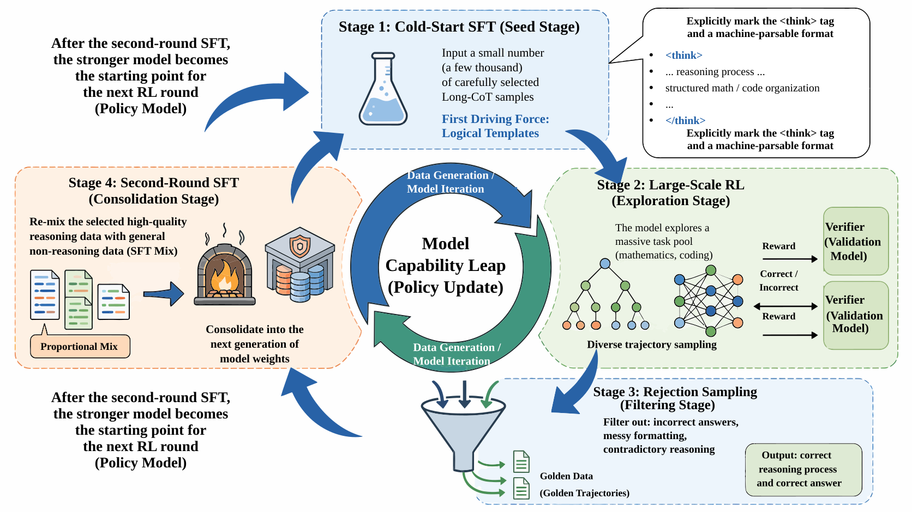
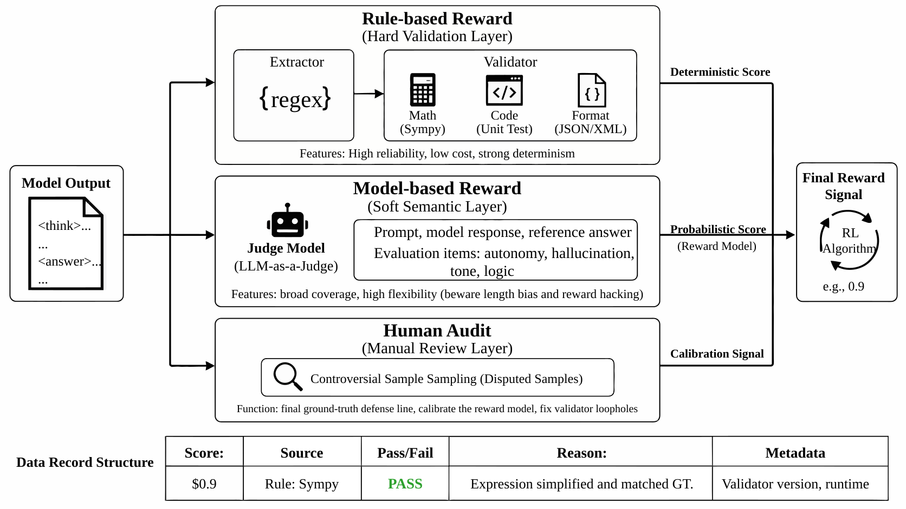
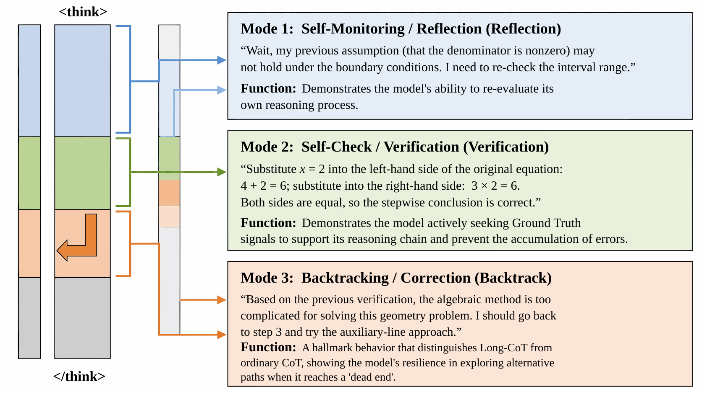

第46章：推理数据飞轮：R1 与 QwQ¶
摘要¶
上一章讨论了后训练阶段的 SFT、偏好对齐、奖励模型和 RLVR 数据接口。本章继续向前推进，聚焦 2025 年以来开源社区最重要的一类变化：推理模型不再只依赖人工写好的长思维链样本，而是开始通过强化学习（Reinforcement Learning, RL）和可验证奖励，主动扩大自己的推理轨迹空间。
在传统后训练流程中，数据工程的核心问题通常是“如何构造更好的答案”。到了 R1 / QwQ / Kimi-1.5 这一类推理模型中，问题变成了“如何让模型在可验证任务上自己探索、自己试错、自己筛选，并把成功轨迹沉淀为下一轮监督数据”。这意味着数据工程不再只管理 instruction 和 response，而要管理任务池、采样轨迹、验证器、奖励信号、失败原因、拒绝采样结果和二轮 SFT 数据。
本章可以按四条主线理解：
- 推理模型的数据范式变化：从人工 CoT 到 RL 产生的 Long-CoT。
- R1 风格数据飞轮：冷启动 SFT、大规模 RL、拒绝采样、二轮 SFT。
- 奖励与验证器工程：rule-based reward、model-based reward、verifier 池和过程信号。
- 开源复现路径：OpenThoughts、Sky-T1 与小团队可运行的低成本推理数据工厂。
如果按工程顺序阅读，本章对应的是一条完整链路：
任务池构建 -> 冷启动 SFT -> 多路采样 -> 规则验证 -> RL 更新 -> 拒绝采样 -> 二轮 SFT -> 评估与回流
这一结构对应的核心目标，是把“推理能力”从一种模型表现，拆解成一组可生产、可验证、可复盘的数据工程对象。
关键词¶
推理模型与；数据配方；开源大模型；训练数据；阶段化调度
学习目标¶
- 能够解释推理模型从人工 CoT 到 RL 产生 Long-CoT 的数据范式变化。
- 能够构建 R1 风格数据飞轮的四阶段链路：冷启动 SFT、大规模 RL、拒绝采样与二轮 SFT。
- 能够设计 rule-based reward、model-based reward、验证器池与过程奖励信号等奖励与验证器工程。
- 能够对比 R1、QwQ、Kimi-1.5 等范式的数据集曝光，并复现 OpenThoughts、Sky-T1 等低成本推理数据工厂路径。
- 能够识别推理数据工程的典型失败模式，评估其成本、风险与适用边界。
46.1 RL 范式问题场景：为什么推理数据不再只是写 CoT¶
在早期指令微调阶段，团队经常把推理能力理解为“给模型更多带步骤的答案”。例如，对数学题写出详细解法，对代码题写出逐步分析，对逻辑题写出推导链。这样的数据确实可以让模型学会“像在推理一样回答”，但它有一个天然限制：模型只是在模仿已经写好的轨迹，并没有真正学会在错误空间中探索。
这一传统路线背后有多条代表性技术线索：STaR 强调从模型自身推理中自举出新监督信号，Self-Refine 强调利用反馈迭代修正回答，LIMA 则提醒少量高质量对齐样本也可能带来显著行为变化（Zelikman et al. 2022; Madaan et al. 2023; Zhou et al. 2023）。这些工作共同说明，推理数据的价值不只来自链条长度，也来自能否形成可筛选、可回流的改进过程。
这个限制在复杂任务上很快会暴露出来。一个模型可以流畅地写出“首先、其次、因此”，但每一步可能并没有被验证；它也可以在训练集常见题型上表现很好，但遇到略微变化的数学条件、边界输入或代码测试用例时，推理链就会断裂。更重要的是，人工写 CoT 的成本很高，且难以覆盖大规模题型。团队可以写 1 万条、10 万条高质量 CoT，但很难人工写出足够多的失败轨迹、修正轨迹和边界轨迹。
R1-Zero 这类实验给数据工程带来的启发是：在可验证任务上，模型并不一定需要先看大量人工 CoT，才能产生可用的推理行为。只要任务可以被程序化验证，模型就可以通过采样和奖励信号逐渐发现更有效的推理路径。数学题的最终答案、代码题的单元测试、结构化输出的 schema 检查、工具调用的返回状态，都可以成为训练信号的一部分。
这并不意味着 SFT 不重要。相反，R1 与 R1-Zero 的差异说明：纯 RL 可以激发推理行为，但也可能产生可读性差、格式混乱、语言混杂、回答不稳定等问题；冷启动 SFT 则可以为模型提供基本格式、可读推理风格和输出边界。推理数据工程的关键，不是选择“只要 SFT”或“只要 RL”，而是把 SFT 与 RL 放在同一条数据飞轮中。
从数据视角看，传统 CoT 数据和 RL 推理数据有三个区别。
第一，监督单位不同。传统 CoT 的监督单位通常是一条完整答案；RL 推理数据的监督单位可以是一次采样、一组候选、一个最终答案、一个 verifier 结果，甚至一个中间步骤。
第二，质量判断不同。传统 CoT 依赖人工或强模型判断“写得好不好”；RL 推理数据优先依赖可验证信号判断“是否正确、是否通过测试、是否满足格式”。
第三，数据生命周期不同。传统 CoT 数据通常是静态数据集；RL 推理数据是循环产生的。模型当前能力越强，采样轨迹越丰富，拒绝采样能留下的新监督数据也越多。
因此，本章讨论的不是强化学习算法本身，而是 RL 范式下的数据工程问题：任务从哪里来，验证器如何写，采样轨迹如何存，哪些轨迹进入二轮 SFT，哪些失败轨迹进入 hard case 池，以及如何防止模型在奖励信号上产生投机行为。
在这个范式中，数据工程师面对的对象也发生了变化。过去一条样本的主要边界是 prompt 和 answer；现在一条样本可能对应一个任务族、一组采样参数、若干条候选轨迹、多个验证器输出、一次人工审计结论和后续训练去向。也就是说，推理数据不是“更长的回答”，而是带有生产过程的训练资产。它必须能解释三件事：模型为什么会生成这条轨迹，系统为什么判定这条轨迹值得保留，以及这条轨迹进入训练后希望改变模型的哪类行为。
这一点对项目规划尤其重要。如果团队只是下载一个 Long-CoT 数据集，然后把它转换成 SFT 格式，得到的是一次静态微调；如果团队能够把任务池、采样、验证、筛选和回流连接起来，得到的才是推理数据飞轮。静态微调可以提升某个时间点的模型表现，但很难持续吸收模型自己发现的新解法。数据飞轮则允许团队把每轮模型的成功和失败都转化为下一轮数据：成功轨迹用于稳定能力，失败轨迹用于扩充难例，格式失败用于修复协议，验证器漏洞用于更新规则。
从业务落地角度看，适合进入 RL 推理飞轮的任务通常具有四个特征。第一，题目可以规模化生成或稳定采集，例如数学题库、代码修复任务、SQL 查询、表格计算、规则配置和工具调用链。第二，答案可以被某种机制验证，不一定完全自动，但至少能形成明确的通过或失败信号。第三，任务难度有梯度，既有模型容易做对的样本，也有需要多步推理的样本。第四，任务分布与目标应用有关，不能只为了 benchmark 分数而训练与真实使用脱节的题型。
不适合直接进入第一轮 RL 的任务也需要提前识别。例如开放式战略分析、医疗建议、法律解释、情感支持和创意写作，往往没有唯一答案，且错误成本可能较高。这类任务可以在后续阶段引入 model-based reward、人工偏好或专家审计，但不应作为验证器尚未成熟时的第一批训练对象。对于小团队来说，先从可验证任务建立闭环，再逐步扩展到半开放任务，通常比一开始就覆盖所有场景更稳。
46.2 R1 范式数据飞轮的四阶段¶
R1 风格推理数据飞轮可以拆成四个阶段：冷启动 SFT、大规模 RL、拒绝采样、二轮 SFT。这四个阶段不是线性的一次性流程，而是可以反复运行的闭环。
图46-1展示了相应的流程或结构。

{kind=link}
46.2.1 第一阶段：冷启动 SFT¶
冷启动 SFT 的目标不是把模型训练成高性能推理模型，而是让模型具备可读、稳定、可解析的推理输出格式。这个阶段通常需要少量高质量 Long-CoT 样本，覆盖数学、代码、逻辑题、格式遵循和必要的通用问答。
冷启动数据应当满足四个条件。
第一，推理过程可读。样本不能只有最终答案，也不能是混乱的内部草稿，而要能展示关键步骤、条件引用和结论收束。
第二，格式可解析。常见做法是把推理过程放在 <think> 标签中，把最终答案放在 <answer> 或固定字段中。这样后续 verifier 可以稳定提取答案。
第三，任务可验证。至少一部分冷启动任务应当有明确答案或测试脚本，否则后续很难接入 RLVR。
第四，语言与风格一致。如果模型需要面向中文用户，就应当避免在推理链中频繁混入英文模板；如果模型需要输出英文代码解释，也要避免中文提示残留破坏格式。
冷启动 SFT 的规模不必很大。对于教学型或小团队项目，几千到几万条高质量 Long-CoT 往往比几十万条低质量 CoT 更有价值。Sky-T1 这类社区项目也说明，小规模精心构造的推理数据可以显著改善 32B 级开源模型的数学和代码表现 [D]。
如果冷启动样本来自已有开源聊天模型或基础模型，还应注意不同模型族的许可、数据披露程度和对齐阶段差异。Llama 2 这类开放基础模型报告提供了理解模型卡、许可边界与微调数据透明度的早期参照（Touvron et al. 2023）。
冷启动阶段最容易出现的误区，是把样本写得过于“完美”。真实 RL 后的推理轨迹通常包含试探、检查、回看条件和修正，而人工冷启动样本如果只呈现线性推导，模型会学到一种过分整齐的解释风格。这样的风格在简单题上可读性很好，但在复杂题上可能缺少自检能力。因此，冷启动数据可以保留适度的中间检查，例如“这里需要确认边界条件”“这个式子只在分母不为零时成立”“先用小样例验证一下”。这些表达不是为了制造冗长，而是为了给后续 RL 提供可延展的推理行为模板。
冷启动数据还要控制“答案泄漏”。在很多合成数据中，生成器先知道标准答案，再倒写推理过程，容易出现步骤与结论强绑定的问题。模型学到这类样本后，可能在没有真正推理的情况下直接靠模式猜答案。更稳妥的做法是保留题目、标准答案和推理过程之间的检查字段，例如 answer_source、verified_by、trace_quality 和 leakage_risk。如果样本来自强模型蒸馏，还应记录 teacher 模型、采样温度和过滤规则，避免后续无法追溯数据偏差。
冷启动 SFT 结束后，不应只看 benchmark 分数。更重要的检查项包括：模型是否稳定输出目标格式，是否能把最终答案放在可解析位置，是否在简单问题上不过度展开，是否在中文任务中保持中文表达，是否在代码任务中避免执行危险操作。只有这些工程条件达标，后续采样和 verifier 才能稳定接上。
46.2.2 第二阶段：大规模 RL¶
进入 RL 阶段后，模型不再只是模仿给定答案，而是在任务池上进行多路采样，并根据奖励信号更新策略。这里的关键数据对象不再是一条 SFT 样本，而是一组轨迹：
代码清单46-1给出了JSON 数据示例。
{
"task_id": "math_000123",
"prompt": "...",
"samples": [
{
"sample_id": "s0",
"reasoning": "...",
"answer": "42",
"verifier_pass": true,
"reward": 1.0
}
],
"verifier": "sympy_v1",
"model_version": "policy_step_0200"
}
代码清单46-1：JSON 数据示例
这个结构显示，RL 数据工程必须记录任务、采样、答案、验证器、奖励和模型版本。如果只保存最终训练后的模型权重，就无法复盘模型为什么变好，也无法定位 reward hacking。
大规模 RL 的任务池通常优先选择数学、代码和结构化输出，因为这些任务可以写 verifier。开放式写作、情感支持、法律咨询等任务虽然也有推理成分，但很难用单一规则判断对错，不适合作为第一批 RLVR 任务。
任务池的难度分布会直接影响 RL 的学习信号。过于简单的题目会让大多数采样都通过验证，奖励缺少区分度；过难的题目会让几乎所有采样失败，模型很难获得正反馈。工程上可以把任务分成四档：基础题用于稳定格式，中等题用于产生主要学习信号，困难题用于扩展上限，保留题用于评估而不进入训练。每一轮训练后，团队都可以根据通过率调整采样比例，把通过率过高的题下调，把仍有探索空间的题保留下来。
采样配置也属于数据配方的一部分。temperature、top_p、max_tokens、stop tokens、候选数和随机种子都会改变轨迹分布。较低温度可以得到稳定答案，但探索不足；较高温度可以增加多样性，但也会增加格式失败和无效推理。R1 风格飞轮通常需要多路采样，因为单次采样只能观察模型的一条路径，而多路采样可以暴露模型在同一任务上的不确定性。对于同一道题，如果 16 条候选中只有 1 条正确，这说明任务仍有学习价值；如果 16 条全部正确，则它更适合作为稳定性评估；如果 16 条全部无法解析，则优先修复格式或降低难度。
RL 阶段的训练日志需要和数据日志对齐。只记录 loss、reward 均值和 benchmark 分数是不够的，还要记录每类任务的通过率、格式失败率、平均轨迹长度、重复片段比例、语言混杂比例和 verifier 错误比例。这样当模型突然变得“更会推理但更啰嗦”时，团队能够判断问题来自奖励设计、采样上限，还是二轮 SFT 数据混合。
46.2.3 第三阶段：拒绝采样¶
拒绝采样（Rejection Sampling）是 R1 风格飞轮的关键连接层。模型在同一任务上生成多个候选回答，系统通过 verifier、投票、格式检查和安全过滤，留下高质量轨迹。DeepSeek-R1 报告披露了通过拒绝采样构造大规模推理数据，并额外混入非推理数据以保持通用能力的做法 [D]。
拒绝采样不等于简单选择 reward 最高的样本。一个可靠的过滤器至少要看五类信号：
- 最终答案是否正确；
- 推理过程是否包含明显矛盾；
- 输出格式是否可解析；
- 是否存在语言混杂或重复拖长；
- 是否触发安全、版权或隐私过滤。
如果只看最终答案，系统可能留下“猜对答案但过程错误”的轨迹；如果只看 RM 分数，系统可能放大奖励模型偏好。因此，拒绝采样最好采用多信号过滤。
多信号过滤可以分成硬过滤和软排序。硬过滤用于剔除不可接受样本，例如答案错误、格式无法解析、触发安全规则、包含明显重复或超出长度上限。软排序用于在多个合格样本中选择更适合进入 SFT 的轨迹，例如优先选择推理步骤清晰、长度适中、语言一致、引用条件完整的候选。这样可以避免一个极端情况：模型生成一条非常长的答案，最终结果正确，但中间包含大量无关内容；如果只按通过验证筛选，这类样本会污染二轮 SFT。
拒绝采样还要避免样本同质化。若每道题只保留最高分的一条轨迹，训练集可能过分偏向某种表达模板。更好的方式是按任务保留有限数量的多样化成功轨迹，同时对近似重复文本做去重。数学题可以保留不同解法，例如代数法、几何法和枚举法；代码题可以保留不同实现思路，但要保证可读性和复杂度不过度膨胀。多样性不是为了让答案花哨，而是为了让模型在相似任务中具备更强的迁移能力。
失败轨迹在拒绝采样阶段同样有价值。完全错误的样本不应进入二轮 SFT，但可以进入错误分析表；接近正确的样本可以进入 hard case 池；格式错误但思路正确的样本可以进入格式修复集；由于 verifier 漏洞导致误判的样本则应触发验证器更新。一个成熟的数据飞轮不会把失败样本直接删除，而是把失败样本转化为下一轮工程任务。
46.2.4 第四阶段：二轮 SFT¶
拒绝采样留下的高质量轨迹可以重新打包成 SFT 数据，用于二轮 SFT。二轮 SFT 的作用是把 RL 阶段偶然探索到的高质量行为稳定下来，让模型在不进行采样搜索时也更容易生成类似轨迹。
二轮 SFT 需要注意数据混合。如果只使用推理轨迹，模型可能退化为“所有问题都长篇推理”；如果只强调数学和代码，模型可能损失闲聊、事实问答、格式遵循等通用能力。因此，DeepSeek-R1 路线中补充非推理 SFT 数据的设计很重要：它让模型在增强推理能力的同时保留助手行为。
在工程实现上，二轮 SFT 数据应当保留来源标签：
source=rl_rejection_mathsource=rl_rejection_codesource=non_reasoning_sftsource=safety_alignmentsource=format_following
这样训练后如果出现过度思考、回答过长或通用能力下降，可以回溯数据混合比例。
二轮 SFT 的数据混合可以按“能力保持”和“能力增强”分层。能力增强数据来自 RL 成功轨迹，目标是提升数学、代码、工具调用或长上下文推理能力；能力保持数据来自通用对话、事实问答、短回答、格式遵循和安全拒答，目标是防止模型把所有问题都当成竞赛题处理。对于面向产品的助手，这一点尤其重要。用户问“今天会议纪要怎么整理”时，模型不应先输出数百字推理过程；用户要求写 SQL 时，模型则需要在必要处展示约束和假设。
二轮 SFT 后的评估也应分成两类。第一类是能力评估，关注数学、代码、逻辑、长上下文和结构化输出是否提升。第二类是行为评估，关注回答长度、格式稳定、语言一致、安全边界和普通对话体验是否退化。很多推理模型的工程问题不是“不会做难题”，而是“在简单问题上想太多”。如果只看难题 benchmark，团队可能错过这类产品体验退化。
在数据版本上，二轮 SFT 应当生成独立 manifest，记录每个训练 shard 的来源、过滤规则、采样日期、policy 模型、verifier 版本和去重指纹。这样后续发现某个模型版本出现异常时，可以快速定位是某批拒绝采样数据、某个 verifier 版本，还是某类非推理数据比例造成的。对于长期项目，这种 manifest 比单个数据文件更重要。
46.3 关键技术与选型¶
R1 范式的数据工程核心，是奖励信号与验证器设计。没有可靠奖励，RL 只是在放大模型已有偏差；没有可追踪数据结构，拒绝采样也无法复盘。
图46-2展示了相应的流程或结构。

{kind=link}
46.3.1 Rule-based reward 与 model-based reward¶
Rule-based reward 指由程序规则产生的奖励。数学题可以比较最终答案，代码题可以运行单元测试，JSON 输出可以做 schema 校验，SQL 可以执行并比较结果表。它的优势是稳定、便宜、可复现，缺点是覆盖范围有限。
Model-based reward 指由奖励模型或 LLM-as-Judge 产生的奖励。它可以覆盖开放式问答、解释质量、风格和安全边界，适用范围更广，但也更容易受到偏见、长度偏差和 prompt 敏感性的影响。
LLM-as-Judge 的工程使用需要单独校准。MT-Bench 和 Chatbot Arena 的经验显示，模型评审可以提高开放式评测吞吐，但也会引入位置偏差、长度偏差和模型家族偏好；奖励模型过度优化研究也说明，持续追逐单一 reward 可能让策略偏离真实质量目标（Zheng et al. 2023; Gao et al. 2023）。
两类 reward 不应该互相替代，而应该分层使用。对于答案可验证任务，优先使用 rule-based reward；对于开放式任务，可以使用 model-based reward，但要配合人工抽检和审计集；对于高风险领域，不能只依赖模型评审。
在训练系统中，reward 最好不要只存一个浮点数。一个单一分数便于算法消费，却不便于工程排错。更实用的结构是同时保存 reward_score、reward_source、pass_flag、failure_reason 和 audit_notes。例如数学题通过符号比较得到 1.0，代码题通过全部测试得到 1.0，格式错误得到 0.0，答案正确但超长可能得到 0.8。分数可以参与训练，但原因字段决定后续如何修复数据。
Rule-based reward 的最大优势是可复现，但它也会诱导模型寻找规则漏洞。只要验证器只看最终答案，模型就可能忽略过程；只要测试用例覆盖不足，模型就可能写出过拟合测试的代码；只要 JSON schema 只检查字段存在，模型就可能填入无意义内容。因此，规则奖励不是“一写就可靠”，而是需要像生产代码一样做单元测试、回归测试和异常样本测试。
Model-based reward 的优势是覆盖更复杂的人类偏好，但它必须被约束在合适位置。若让 judge 模型直接决定所有奖励，训练系统可能继承 judge 的口味，例如偏好更长解释、更礼貌措辞或更自信语气。对于推理任务，judge 更适合做补充判断：检查推理过程是否自洽、是否遗漏条件、是否存在明显幻觉，而不是替代可验证答案。数据记录中也要保存 judge prompt，否则评审标准变化后无法比较不同批次数据。
表46-1列出了相关字段与出版复核口径。
表46-1：风险、控制措施与复核口径
| 奖励类型 | 适用任务 | 优点 | 风险 | 数据记录重点 |
|---|---|---|---|---|
| Rule-based reward | 数学、代码、结构化输出 | 稳定、可复现、成本低 | 覆盖范围有限，规则可能有漏洞 | verifier 版本、测试用例、失败原因 |
| Model-based reward | 开放问答、风格、安全 | 覆盖范围广 | 偏好漂移、长度偏差、judge 污染 | judge 版本、评分 prompt、理由 |
| Human audit | 高风险样本、争议样本 | 判断可靠 | 成本高、规模有限 | 标注员一致性、复核轮次 |
对于多数团队，一个稳妥的顺序是先做 rule-based reward，再引入小规模 model-based reward，最后在高风险样本上做人工审计。这个顺序可以把自动化收益先拿到手，同时把不确定性留在可控范围内。如果一开始就使用模型评审覆盖所有任务，系统看起来很快验证，但后续很难解释模型为什么学到某种偏好。
46.3.2 Verifier 池¶
Verifier 池是推理数据飞轮的基础设施。它不是一个单独脚本，而是一组可版本化、可测试、可回滚的验证器。
数学 verifier 通常包括答案提取、单位归一化、符号化比较和容差判断。对于 \frac{1}{2}、0.5、50% 这类等价答案，不能只做字符串比较。更稳妥的方式是使用 sympy (Meurer et al. 2017) 等符号工具做表达式化简。
代码 verifier 通常包括沙箱执行、超时控制、内存限制、单元测试和安全拦截。代码任务的奖励不能只看是否运行成功，还要记录失败类型，例如编译错误、运行时错误、超时、答案错误或格式错误。
格式 verifier 用于检查 JSON、XML、工具调用参数和 <think>/<answer> 标签。很多推理模型的失败不是答案错，而是答案无法被系统解析。格式 reward 可以减少这类工程故障。
一个可维护的 verifier 池通常需要四类接口。第一类是 extract，负责从模型输出中抽取最终答案、代码块、JSON 字段或工具参数。第二类是 normalize，负责做单位换算、空白清理、大小写处理、数学表达式标准化和代码依赖整理。第三类是 check，负责执行真正的验证逻辑。第四类是 explain，负责输出失败原因，供日志、审计和 hard case 分析使用。
以数学任务为例，extract 需要处理“答案是 1/2”“因此 x=0.5”“最终为 50%”等表达；normalize 需要把分数、小数、百分数和带单位答案转成可比较形式；check 需要区分精确相等、数值近似和符号等价；explain 需要返回 parse_error、not_equivalent、unit_mismatch 或 multiple_answers。没有这些细分原因，团队只能看到通过率下降，却不知道应当修题目、修解析器还是修模型。
代码任务的 verifier 更复杂。它需要隔离文件系统、限制网络、控制 CPU 与内存、设置运行超时，并记录依赖版本。对数据工程来说，测试用例本身也是数据资产。公开 benchmark 的测试可能不足以覆盖业务逻辑，自有代码任务还需要隐藏测试、边界测试和安全测试。若模型在公开测试上表现很好但在线失败，常见原因不是 RL 算法问题，而是 verifier 对真实约束覆盖不足。
Long-CoT 轨迹的质量也可以从内部结构观察。常见的三类片段是 Reflection、Verification 和 Backtrack：Reflection 用于重新审视假设，Verification 用于检查中间结论或最终答案，Backtrack 用于在发现路径错误后回退并更换解法。这三类模式不应被机械地写成固定模板，而应作为分析推理轨迹时的结构标签。
图46-3展示了相应的流程或结构。

{kind=link}
46.3.3 Long-CoT 中英文混合推理策略¶
在处理 Long-CoT 数据时，开源社区常面临语言混杂（Language Mixing）问题。模型在推理过程中频繁中英文夹杂，可能导致最终输出格式不稳定。在 QwQ 与 Kimi-1.5 相关实践中，解决这一问题主要依赖混合推理数据的纯化策略。
首先，在冷启动阶段构造 Long-CoT 种子时，需要在 prompt 层面对语言一致性提出要求。例如中文任务要求 <think> 内部推导使用中文，英文任务要求全程英文。其次，在 RL 或拒绝采样阶段，可以针对语言混杂引入格式惩罚：如果模型在连续推理片段中频繁切换语言，降低该轨迹优先级。最后，在二轮 SFT 中，应当优先保留语言稳定、答案可解析的轨迹。
语言一致性不是为了限制模型的跨语种知识，而是为了提高工程可控性。推理模型可以利用跨语种知识，但最终训练数据应当保持面向用户的表达稳定。
中英文混合还会影响评估。很多中文题如果允许模型在 <think> 中大量使用英文，最终答案可能仍然正确，但用户体验会下降；反过来，某些代码和数学符号环境中，强行中文化变量或术语也会降低可读性。因此，语言策略不应简单设为“只能中文”或“只能英文”，而应按任务类型定义。例如中文数学讲解要求自然中文推理，代码题允许英文 API 名称和错误信息，论文问答可以保留原文术语但解释用中文。
在数据过滤上，可以使用轻量语言检测器计算每段轨迹的语言比例，结合任务语言做阈值判断。对于中文任务，如果推理主体英文比例过高，可以标记为 language_mixing；对于代码任务，可以只检查自然语言段，不把代码关键字计入英文比例。这个细节看似琐碎，但会显著影响拒绝采样质量。
46.3.4 轨迹存储与版本控制¶
推理数据比普通 SFT 数据更依赖元信息。建议最小字段包括：
表46-2列出了相关字段与出版复核口径。
表46-2：字段说明与复核口径
| 字段 | 含义 |
|---|---|
task_id |
原始题目 ID |
source |
数据来源，如 GSM8K (Cobbe et al. 2021)、MATH (Hendrycks et al. 2021)、HumanEval (Chen et al. 2021)、自有题库 |
policy_model |
生成轨迹的模型版本 |
sampling_config |
temperature、top_p、max_tokens、seed |
reasoning_trace |
推理过程 |
final_answer |
最终答案 |
verifier_name |
验证器名称 |
verifier_version |
验证器版本 |
reward |
奖励值 |
failure_reason |
失败原因 |
selected_for_sft |
是否进入二轮 SFT |
没有这些字段，团队很难判断一次性能提升来自模型、采样、验证器还是数据过滤。
轨迹存储还要区分“原始轨迹”和“训练视图”。原始轨迹应尽量完整，保留模型输出、采样配置、日志和验证结果；训练视图则是经过清洗后的 SFT 或 RL 输入，用于实际训练。二者不能混为一谈。如果只保存训练视图，很多排错信息会丢失；如果直接用原始轨迹训练，又可能把错误、重复和敏感内容带入模型。
推荐的版本组织方式是三层。第一层是任务版本，例如 task_pool_math_v3，记录题目和标准答案；第二层是轨迹版本，例如 rollout_qwen32b_step1200_temp0.8_v1，记录某个模型在某个配置下的采样结果；第三层是训练集版本，例如 sft_rejection_mix_2025_02_01，记录最终进入训练的数据。这样可以支持一个任务池对应多轮采样，一个采样结果对应多个过滤策略，一个过滤策略对应多个训练实验。
去重也是轨迹存储的一部分。推理数据中常见两类重复：题目重复和轨迹模板重复。题目重复会导致评估泄漏，轨迹模板重复会让模型学会固定话术。前者可以用题目文本、标准答案和语义向量去重；后者可以对推理步骤做 n-gram 或段落级相似度检测。对于开源数据与自有数据混合的项目，去重尤其重要，因为同一道 benchmark 题可能以不同改写形式出现。
46.4 数据集曝光对比¶
随着 DeepSeek-R1、QwQ-32B 与 Kimi-1.5 等推理模型出现，传统 SFT 指令数据集逐渐让位于以 RL 和 Long-CoT 轨迹为核心的数据形态。公开技术报告和数据集卡片披露的信息并不完全一致，因此本节只把明确来源标为 [D]，把基于公开描述的合理推断标为 [I]，把教学估算标为 [E]。
同时对于 QwQ、Kimi、OpenThoughts、Sky-T1 以及类似社区路线，凡是原始材料没有明确披露的训练配方、采样比例、过滤阈值和回流细节，本文一律只按工程推断处理，不写成确定事实。
DeepSeek-R1：冷启动、RL 与拒绝采样¶
DeepSeek-R1 报告 (Guo et al. 2025) 披露了 R1-Zero 与 R1 两条路径 [D]。R1-Zero 展示了大规模 RL 在没有传统 SFT 冷启动时也能激发推理行为，但输出可读性和稳定性存在问题。R1 则在 RL 前加入少量冷启动 Long-CoT 数据，再通过 RL、拒绝采样和二轮 SFT 形成更稳定的模型。
DeepSeek-R1 路线有三个数据工程要点。
第一，冷启动数据强调可读性。它不是大规模堆叠，而是为模型提供标准推理格式和回答风格。
第二，拒绝采样生成大规模推理轨迹。报告披露的 600K 推理数据和 200K 非推理数据，说明 R1 不只是强化数学代码能力，也注意维持通用助手行为 [D]。
第三，非推理数据的混入很关键。如果只让模型在数学和代码任务上进行 RL，模型可能在普通对话、事实问答和格式遵循上退化。
从复现角度看，DeepSeek-R1 最值得学习的不是某个不可见的比例，而是阶段之间的职责划分。冷启动阶段负责让模型“说得清楚”，RL 阶段负责让模型“试得更多”，拒绝采样负责让数据“留下好的”，二轮 SFT 负责让行为“稳定复现”。这四件事分别解决不同问题。如果团队试图用一个大规模 SFT 数据集同时解决所有问题，往往会遇到上限：模型会模仿长推理格式，但不会因为答错而得到明确反馈，也不会自动产生更多有用轨迹。
DeepSeek-R1 披露的数据规模还提示了一个比例问题：推理能力增强不能脱离通用助手能力。600K 推理数据可以强化数学、代码和复杂问题处理，200K 非推理数据则用于保持对话、写作、事实问答和安全行为 [D]。这个思路可以迁移到小团队项目中。即使只做 2 万条拒绝采样轨迹，也应当混入一定比例的短回答、格式遵循和拒答样本，以免模型在所有问题上都输出长链条。
QwQ-32B：开权重推理模型与 RL 后训练¶
QwQ-32B (Qwen Team 2025) 的公开卡片说明其训练包含预训练和后训练，后训练包含 SFT 与 RL [D]。相比 DeepSeek-R1，QwQ 的完整数据配方披露较少，因此本章不补猜具体数据比例。
从数据形态上看，QwQ 类模型的重要启发在于：推理轨迹中常出现等待、检查、反思和回溯等模式。这类模式可能来自模型自身采样，也可能来自训练数据和 RL 目标共同作用 [I]。对数据工程师来说，重点不是把“Wait”这类词硬编码进样本，而是保留模型尝试、验证、修正的完整轨迹。
QwQ 对开源复现的另一个启发，是模型权重开放并不等于数据 recipe 完整开放。使用者可以直接评测模型能力，也可以蒸馏其输出，但不能据此还原完整训练过程。数据工程师在引用这类模型时，应把它当作可用的 teacher、policy 或 baseline，而不是把未披露的训练数据比例写成确定事实。
在项目中使用 QwQ 类模型时，常见路径是让它生成候选 Long-CoT，再用自有 verifier 过滤。这样得到的数据并不是“复制 QwQ recipe”，而是“借助强推理模型生成候选，再用本地任务约束筛选”。这种方式适合冷启动阶段，但不能替代后续闭环。原因很简单：teacher 模型的能力边界和偏差会进入学生模型，只有接入自有任务池和验证器，数据才会逐步贴近目标场景。
Kimi-1.5：长上下文与 RL 扩展¶
Kimi k1.5 (Kimi Team 2025) 报告强调长上下文扩展和改进的策略优化方法，并说明其 RL 框架不依赖更复杂的蒙特卡洛树搜索（Monte Carlo Tree Search，MCTS）、value function 或 PRM [D]。这一路线提醒我们，推理数据不只来自数学和代码，也可以来自长上下文任务。
长上下文推理的难点在于证据管理。模型需要在长文档、多段材料或多轮上下文中定位证据，再把证据转化为推理链。数据侧必须记录引用位置、证据片段、答案依据和失败原因。如果只记录最终答案，无法判断模型是基于证据推理，还是凭语言先验猜测。
Kimi k1.5 这类路线把推理数据工程从“题目-答案”扩展到“上下文-证据-推理-答案”。长上下文任务的 verifier 也更复杂。对于文档问答，验证器不仅要看答案是否正确，还要看引用是否来自给定材料；对于多轮任务，系统要判断模型是否记住了前文约束；对于工具增强任务，还要检查工具调用顺序和中间结果。若没有证据字段，长上下文 RL 很容易奖励到“看似合理但无依据”的回答。
这类任务可以采用分层评估。第一层检查格式，例如答案是否包含引用编号；第二层检查证据，例如引用段落是否真的支持结论；第三层检查最终答案，例如数值、实体或判断是否正确；第四层检查简洁性和安全性。前两层是长上下文任务区别于普通数学题的关键。它们让模型不仅追求最终答案，还要学会把答案绑定到可追溯证据。
OpenThoughts 与 Sky-T1：社区复现路径¶
OpenThoughts-114K (Guha et al. 2025) 是开源社区中重要的推理数据集之一，Hugging Face 数据集卡显示其以 Apache-2.0 许可证发布，并提供 parquet 格式数据 [D]。它的价值在于提供了可下载、可检查、可用于训练的 Long-CoT 样本，使研究者能够复现实验并研究推理数据配方。
Sky-T1 (NovaSky-Berkeley 2025) 则展示了另一种低成本路线。公开介绍显示，Sky-T1-32B-Preview 基于 Qwen2.5-32B-Instruct，并使用较小规模的高质量推理数据进行训练，团队同时释放了模型、数据和训练代码 [D]。它说明，推理能力的改进并不一定只能依赖大规模 RL；在某些场景下，结构良好的 Long-CoT SFT 也能带来明显收益。
OpenThoughts 和 Sky-T1 的共同价值，是把推理数据从“只能由大厂内部生产”变成了可被社区检查和复现实验的对象。对本书读者来说，这类项目适合作为实验起点：先下载开放数据，检查字段和许可证，抽样阅读轨迹质量，再把其中可验证任务接入本地 verifier。完成这一流程后，团队就能从“使用数据集”进入“维护数据生产线”。
不过，开源数据也不能直接等同于业务数据。OpenThoughts 这类数据的题型、语言、难度和答案风格都有自身分布，Sky-T1 的训练目标也不一定与企业场景一致。将它们用于项目时，需要做三项检查：是否与目标语言一致，是否覆盖目标任务类型，是否包含评估集泄漏风险。只有通过这些检查，开源数据才适合作为冷启动数据或对照实验数据。
表46-3汇总了本节的关键对象、工程要点与复核口径。
表 46-3：主流推理模型与数据集曝光对比
| 模型/数据集 | 核心驱动阶段 | 推理轨迹来源 | 是否开源/可下载 | 特色策略 | 标注 |
|---|---|---|---|---|---|
| DeepSeek-R1 | 冷启动 + RL + 拒绝采样 + SFT | 自家模型多路采样与规则验证 | 模型开放，训练数据未完整开放 | 600K 推理数据 + 200K 非推理数据 | [D] |
| QwQ-32B | SFT + RL | 官方未完整披露 | 模型权重开放 | 中等规模推理模型，强调 RL 后训练 | [D/I] |
| Kimi k1.5 | Long-context RL | 官方未完整披露 | 未作为完整数据集开放 | 长上下文扩展与策略优化 | [D] |
| OpenThoughts-114K | SFT / 开源复现 | 社区合成与整理 | 数据集开放 | 114K 级 Long-CoT 数据 | [D] |
| Sky-T1 | 小规模 Long-CoT SFT | QwQ 蒸馏与整理 | 模型、数据、代码开放 | 低成本复现推理能力 | [D] |
表46-4汇总了本节的关键对象、工程要点与复核口径。
表 46-4：Long-CoT 数据特征对比
| 维度 | DeepSeek-R1 | QwQ-32B | Kimi k1.5 | OpenThoughts / Sky-T1 |
|---|---|---|---|---|
| 主要任务 | 数学、代码、通用对齐 | 数学、代码、推理 | 长上下文、多模态与推理 | 数学、代码、科学、逻辑 |
| 轨迹来源 | RL 采样与拒绝采样 | SFT + RL 后训练 | 长上下文 RL | 合成与蒸馏 |
| 是否可下载 | 未完整开放 | 模型开放，数据未完整开放 | 未完整开放 | 可下载 |
| 验证信号 | 规则验证为主 | 披露有限 | RL 奖励与评估 | 规则可验证任务较多 |
| 复现价值 | 理解工业飞轮 | 理解开权重推理模型 | 理解长上下文 RL | 适合小团队实验 |
从表46-1 和表46-2 可以看到，推理模型的数据公开程度并不均匀。工业模型往往披露阶段、结果和部分规模，但不会公开完整数据；社区项目更容易公开数据和脚本，但规模、覆盖面和训练资源有限。复现时应避免两个极端：一是因为工业模型没有完整数据就认为无法学习其方法，二是因为社区数据可下载就认为可以直接达到工业模型效果。更现实的做法，是学习工业路线的阶段设计，使用社区数据完成最小闭环，再用自有任务逐步替换通用题库。
这也解释了为什么本章强调数据工程对象，而不是只比较模型分数。模型分数会随 benchmark、评测模板和解码参数变化；数据对象则决定团队能否持续改进。只要任务池、verifier、轨迹日志和回流机制建立起来，模型可以从 7B 换到 32B，也可以从 SFT 过渡到 RL；如果这些对象没有建立，再强的基座模型也只能做一次性微调。
46.5 案例拆解¶
本节拆解三个组件：OpenThoughts-114K、rule-based reward 验证池，以及拒绝采样实战。它们分别对应数据来源、奖励信号和数据回流。
Case A：OpenThoughts-114K 数据集解剖¶
OpenThoughts-114K 是理解开源推理数据形状的一个窗口。它不再是简单的 {"instruction": "...", "response": "..."}，而是围绕问题、推理、答案和元信息组织样本。
更早的 ThoughtSource 也把推理数据整理成可复用中心库，展示了把不同任务、不同推理格式和不同来源统一登记的必要性；这类资源适合作为推理样本 schema 和来源治理的参考，而不是简单拼接成训练集（Ott et al. 2023）。
一条推理样本通常需要回答三个问题：
- 题目是什么；
- 模型如何推理；
- 最终答案能否被验证。
对于数学题，最终答案可以通过符号计算或标准答案比对验证。对于代码题，可以进入沙箱执行。对于逻辑题，可以通过约束检查或人工抽检判断。OpenThoughts 的价值不只是数量，而是它让研究者看到推理数据应当如何组织：不仅保存答案，还保存中间推理过程。
对工业复现来说，OpenThoughts 的借鉴意义在于先找可验证任务。不要一开始就试图在所有业务场景上做 RL 推理飞轮，而应先找那些“答案可以被程序验证”的任务，例如 SQL 生成、表格计算、规则配置、API 调用链、代码修复和结构化抽取。只要这些任务能够写 verifier，就可以建立小规模 RLVR 或拒绝采样数据管线。
对 OpenThoughts 这类数据做入库时，可以采用四步检查。第一步是许可证检查，确认数据是否允许研究、商用或再分发。第二步是字段检查，确认每条样本是否包含题目、推理、答案和来源。第三步是质量抽检，随机阅读不同任务类型的样本，记录错误答案、无效推理、语言混杂和格式异常比例。第四步是污染检查，将题目与计划使用的评估集做相似度比对，避免训练集和评估集重叠。
入库后的数据不宜直接全部进入训练。更稳妥的方式是建立一个 curated 子集：只保留字段完整、语言稳定、答案可验证、任务来源清楚的样本。对于字段不完整但题目有价值的样本，可以进入 needs_repair；对于答案无法验证或可能污染评估集的样本，应进入 excluded。这种分层会增加前期工作量，但能减少后期训练异常。
蒸馏式推理数据还需要额外记录 teacher、rationale 和最终答案之间的关系。Distilling Step-by-Step 表明，中间解释可以帮助小模型学习，但前提是解释质量、答案正确性和训练目标之间保持一致（Hsieh et al. 2023）。
一个可执行的数据清单如下：
表46-5列出了相关字段与出版复核口径。
表46-5：关键要点与工程复核口径
| 子集 | 进入条件 | 用途 |
|---|---|---|
curated_long_cot |
推理完整、答案可验证、许可证清楚 | 冷启动 SFT |
verifiable_tasks |
有标准答案或测试用例 | RLVR / 拒绝采样 |
needs_repair |
题目有价值但字段不完整 | 数据修复 |
excluded_eval_overlap |
与评估集高度相似 | 禁止训练 |
audit_samples |
高分但可疑或低分但接近正确 | 人工抽检 |
Case B：Rule-based reward 验证数据池构建¶
Rule-based reward 验证池可以拆成三层。
第一层是任务层。任务池应当包含题目、标准答案、任务类型、难度、来源和许可证。对于数学任务，还要记录答案表达形式；对于代码任务，还要记录函数签名、测试用例和运行环境。
第二层是验证层。数学 verifier 负责提取最终答案、做单位归一化、符号化简和容差比较。代码 verifier 负责创建沙箱、运行单元测试、限制执行时间和记录错误。格式 verifier 负责检查 JSON、XML、工具调用参数或 <answer> 标签。
第三层是日志层。每次验证都要记录 verifier 版本、输入、输出、错误类型和耗时。没有日志的 verifier 很难进入训练系统，因为一旦模型表现异常，团队无法判断问题出在模型、题目还是验证器。
数学验证池的基本流程如下：
代码清单46-2给出了 Python 实现片段。
def verify_math(predicted, reference):
pred_expr = normalize_and_parse(predicted)
ref_expr = normalize_and_parse(reference)
if pred_expr is None or ref_expr is None:
return {"pass": False, "reason": "parse_error"}
return {
"pass": symbolic_equal(pred_expr, ref_expr),
"reason": "ok"
}
代码清单46-2：Python 实现片段
代码验证池则需要更严格的安全边界：
代码清单46-3给出了Python 实现片段。
def verify_code(code, tests, timeout=5):
result = run_in_sandbox(code, tests, timeout=timeout)
return {
"pass": result.all_tests_passed,
"reason": result.failure_type,
"runtime_ms": result.runtime_ms
}
代码清单46-3：Python 实现片段
这两个示例都只是结构说明。真实系统需要处理恶意代码、无限循环、环境依赖、浮点误差、答案多解和测试覆盖不足等问题。
验证池上线前，应先准备一组专门测试 verifier 的样本，而不是直接让模型采样结果进入训练。数学 verifier 至少要覆盖整数、分数、小数、百分数、区间、多解、单位换算和近似值。代码 verifier 至少要覆盖正确代码、语法错误、运行时错误、超时、内存超限、依赖缺失和恶意操作。格式 verifier 至少要覆盖缺字段、字段类型错误、额外字段、嵌套结构错误和不可解析输出。
验证池还需要定义统一的失败原因枚举。没有统一枚举时，不同脚本可能分别输出 wrong、failed、not pass、bad answer，后续统计会变得混乱。推荐把失败原因控制在有限集合中，例如 parse_error、wrong_answer、test_failed、timeout、format_error、unsafe_code、judge_disagree 和 verifier_error。其中 verifier_error 要和模型错误区分开：如果验证器自身崩溃，不能把它当作模型答错。
Verifier 池的质量也要被评估。一个简单做法是维护黄金验证集：其中包含人工确认正确和错误的答案，每次更新 verifier 后都跑一遍回归。若新版本让大量已知正确答案失败，说明解析或归一化变严了；若让大量已知错误答案通过，说明规则变松或出现漏洞。训练系统只能使用通过回归的 verifier 版本。
训练 verifier 本身也可以成为数据工程对象。V-STaR 这类工作展示了用自生成轨迹训练验证器的路线，说明 verifier 池既需要规则回归测试，也需要持续积累可判别的正负样本（Hosseini et al. 2024）。
过程级验证也可以借鉴 “Let's Verify Step by Step” 的思路，把整题正确性拆到中间步骤，让数据管线能定位哪一步开始偏离，而不是只在最终答案上给出二元通过/失败（Lightman et al. 2024）。
在生产环境中，verifier 还要考虑成本。数学符号化简可能在复杂表达式上耗时过长，代码沙箱会消耗 CPU 和内存，LLM judge 会产生额外推理费用。数据管线可以先用便宜规则做第一轮过滤，再把少量争议样本交给更昂贵的验证器。这样既能控制成本，也能保留足够的质量信号。
Case C：拒绝采样实战¶
拒绝采样的目标是从模型自己生成的大量候选中筛出高质量轨迹。一个最小流程可以分成五步。
第一步，对同一任务进行多路采样。例如每题采样 4 到 16 条候选，具体数量取决于模型成本和任务难度。第二步，解析每条候选的推理过程与最终答案。第三步，调用 verifier 检查最终答案。第四步，对通过验证的轨迹做二次过滤，去掉格式混乱、语言混杂、重复过长或安全风险样本。第五步，把保留样本打包成二轮 SFT 数据。
拒绝采样应当保留失败样本。失败样本不是垃圾，它可以帮助团队分析模型常见错误，也可以作为后续 PRM 或 hard case 数据。建议把样本分成四类：
表46-6列出了相关字段与出版复核口径。
表46-6：风险、控制措施与复核口径
| 类型 | 含义 | 后续用途 |
|---|---|---|
| pass_good_trace | 答案正确，推理清晰 | 进入二轮 SFT |
| pass_bad_trace | 答案正确，过程混乱 | 进入审计或 PRM 数据 |
| fail_near_miss | 接近正确，局部错误 | hard case 池 |
| fail_invalid | 格式错误或无法解析 | 格式修复数据 |
拒绝采样最常见的错误，是只保留成功答案，删除所有失败轨迹。这样会让数据飞轮失去错误分析能力。更好的做法是：成功轨迹用于增强，失败轨迹用于诊断，格式失败用于修复输出协议。
拒绝采样的保留比例需要和任务难度联动。对于简单题，如果通过率已经很高，可以每题只保留 1 条最简洁轨迹，避免重复；对于中等题，可以保留 2 到 3 条不同解法，增强泛化；对于困难题，即使没有成功轨迹，也应保留若干接近正确的失败样本供错误分析。这样得到的数据集既不会被简单题淹没，也不会丢失困难题的信息。
筛选时还要建立“不可训练但可分析”的区域。例如包含隐私信息、版权风险或不安全代码的轨迹，即使答案正确，也不能进入训练；但它们可以作为安全过滤器的测试样本。又如某条轨迹显示模型发现了 verifier 漏洞，这条轨迹不应作为正样本，却应进入 reward_hacking_cases，用于修复验证器和编写回归测试。
拒绝采样结果可以输出两份数据。一份是 sft_selected.jsonl，只包含可训练的高质量轨迹；另一份是 rollout_audit.parquet，包含所有候选、分数、失败原因和过滤决策。前者供训练系统消费，后者供数据工程和评估系统复盘。很多项目只保存前者，短期看节省空间，长期看会失去解释能力。
一个完整的过滤决策可以写成如下字段：
代码清单46-4给出了JSON 数据示例。
{
"sample_id": "math_000123_s07",
"verifier_pass": true,
"hard_filter_pass": true,
"quality_score": 0.86,
"selected_for_sft": true,
"selection_reason": "correct_answer;clear_trace;language_stable",
"excluded_reason": null
}
代码清单46-4：JSON 数据示例
这种显式决策记录能让团队在后续调整阈值时复用旧轨迹。例如第一次只选择 quality_score >= 0.85 的样本，第二次想扩充数据时，可以重新选择 0.75 到 0.85 的样本，而不必重新采样所有任务。
46.5.1 与第十四篇 P12 的接口映射¶
第46章负责给出理论与范式，第十四篇 P12 负责把这套范式做成可运行项目。为了避免两者被混写，这里把核心对象一一对应。
表46-7列出了相关字段与出版复核口径。
表46-7：关键要点与工程复核口径
| 本章对象 | P12 对应资产 | 接口含义 |
|---|---|---|
| 冷启动 SFT | data/processed/cold_start_5k.jsonl、cold_start_summary.json |
把 Long-CoT 种子整理成首轮可训练样本 |
| 采样轨迹 | data/sampled_traces/*.jsonl |
保存 prompt_id、sample_idx、raw_trace、generation_params |
| verifier | verifier_pool.py、data/verified_candidates/*.jsonl |
执行数学、代码和格式验证，并落盘每条候选结果 |
| rejection sampling | rejection_sampling.py、data/processed/rejection_selected_10k_30k.jsonl |
从候选轨迹中筛出可回流高分样本 |
| 回流接口 | merge_sft_data.py、merged_sft_data.jsonl、training_manifest.json |
把冷启动样本与回流样本合并为二轮 SFT 输入 |
| 评估回路 | eval_gsm8k_math.py、data/reports/eval_results_gsm8k_math.json |
验证训练前后变化，并支持回滚定位 |
这张映射表的意思很简单：本章讲的是“对象、关系和契约”，P12 讲的是“脚本、文件和产物”。只要对象映射清楚，后面无论换模型、换 verifier 还是换任务池，项目都还能沿着同一条接口跑下去。
46.6 常见失败模式¶
第一，reward hacking。 如果 verifier 有漏洞，模型会学会利用漏洞。例如数学答案提取器只读取最后一个数字，模型可能在最后追加正确数字但前面推理完全错误。解决方式是同时检查答案、过程、格式和异常模式。
第二，长度爆炸。 RL 可能让模型倾向于生成更长推理链。长不等于好，过长推理会增加推理成本，也可能降低可读性。训练数据中应加入长度上限、冗余检测和简洁轨迹。
第三，语言混杂。 中英文混杂会破坏面向用户的输出体验，也会影响解析器。冷启动阶段要统一语言要求，拒绝采样阶段要过滤频繁切换语言的轨迹。
多语言推理数据尤其需要单独统计语言与任务类型。已有多语言 CoT 研究说明，跨语言推理能力并不总是随英文 CoT 自动迁移，因此语言混杂既是输出质量问题，也是数据分布问题（Shi et al. 2022）。
第四，过程看似合理但不可验证。 很多 Long-CoT 样本写得很像推理，但没有任何一步能被程序检查。这样的样本适合 SFT，但不适合 RLVR。进入 RL 阶段前，任务池要先按“可验证程度”分级。
第五，过度依赖单一 benchmark。 如果所有任务都来自少数数学或代码 benchmark，模型可能只学会特定题型。任务池应覆盖不同难度、不同来源、不同表达方式，并保留评估隔离区。
第六，二轮 SFT 导致过度思考。
如果二轮 SFT 全部来自长推理轨迹，模型可能在简单问题上也输出长篇 <think>。解决方式是混入非推理对话、简短回答和格式遵循数据。
第七，验证器没有版本管理。 同一批样本在不同 verifier 版本下可能得到不同 reward。如果不记录版本，训练结果无法复盘。每次 verifier 更新都应跑回归测试。
第八，训练集与评估集泄漏。 推理数据常来自公开题库、社区合成数据和模型蒸馏，评估集也常来自相同来源。如果训练前不做相似度去重，模型分数可能被高估。泄漏不一定是完全相同的题目，也可能是改写后的题干、相同数值结构或同一代码题的变体。处理方式是对题目、答案和关键约束做多层去重，并保留隔离评估集。
第九，把 teacher 的错误当成真理。 使用强模型生成 Long-CoT 时，容易相信输出天然高质量。实际上，teacher 也会产生错误推理、过长解释、答案泄漏和幻觉引用。所有 teacher 生成数据都应经过 verifier 或人工抽检，不能因为 teacher 强就跳过质量控制。
闭源或系统卡披露的推理模型可以帮助团队理解能力边界，但不应被当作可直接复制的数据来源。以 o1 系统卡为例，其价值主要在于安全边界、评估维度和系统行为说明，而不是提供可复用训练轨迹（Jaech et al. 2024）。
第十，忽视负样本的组织。 很多团队只整理正样本，导致后续无法训练过程奖励模型，也无法分析模型失败边界。负样本不一定进入 SFT，但应按错误类型保存。结构化的负样本库可以帮助团队发现题型短板、验证器漏洞和采样配置问题。
第十一，采样成本失控。 多路采样会快速放大 token 成本。若每题采样 32 条、每条生成数千 token，小规模题库也会产生很高费用。控制方式包括分难度采样、对简单题减少候选数、对重复失败题提前停止、对超长轨迹截断，并定期清理低价值任务。
第十二，奖励目标与产品目标不一致。 模型在数学 benchmark 上更强，不代表在产品中更好用。若产品需要简洁、可引用、可执行的回答，而训练奖励只看最终答案，模型可能学会冗长输出。每一类 reward 都应映射到产品目标：正确性、可执行性、可读性、安全性和成本。
这些问题共同说明，推理数据工程不是把 RL 算法接到模型后面就结束，而是要持续维护任务、验证器、采样和训练数据之间的契约。任何一个环节的定义变了，后续数据都要重新解释。
46.7 成本、风险与适用边界¶
RL 推理数据飞轮的成本主要来自三部分：多路采样、验证器运行和二轮训练。采样成本随候选数线性增长；代码验证还会消耗沙箱资源；二轮 SFT 则需要重新打包和训练数据。
对于小团队，不建议从完整 RL 训练开始。更现实的路径是：
- 先用开源 Long-CoT 数据做冷启动 SFT；
- 再构建小规模 verifier 池；
- 然后做拒绝采样生成 1 万到 3 万条高质量轨迹；
- 最后用 LoRA 或短步数 SFT 验证收益。
这条路径的重点，是先验证数据生产闭环，再考虑扩大模型和任务规模。
表46-8列出了相关字段与出版复核口径。
表46-8：阶段、产物与复核字段
| 阶段 | 成本来源 | 小团队降级方案 |
|---|---|---|
| 冷启动 SFT | 数据清洗、训练 | 使用开源 Long-CoT 子集 |
| 多路采样 | vLLM 推理 token | 每题从 16 次降到 4 次 |
| verifier | 沙箱、符号计算 | 先做数学，再做代码 |
| 拒绝采样 | 过滤与打包 | 只保留 pass_good_trace |
| 二轮 SFT | 训练 GPU | LoRA 或短步数 smoke test |
适用边界也需要明确。R1 风格飞轮适合数学、代码、结构化输出、工具调用和部分长上下文任务；不适合所有开放式聊天任务。对于安全、医疗、金融和法律任务，规则验证只能覆盖一部分事实或格式，不能替代专家审查。
工具调用任务还可以借鉴 Gorilla 这类 API 连接型模型的经验：当任务目标是选择工具、填写参数并解释返回结果时，数据不仅要记录自然语言答案，还要记录 API 文档版本、调用参数、执行结果和错误恢复路径（Patil et al. 2024）。
成本评估时，不能只估训练 GPU。推理数据飞轮的主要开销常常发生在训练前后：构造任务池、生成候选、运行 verifier、存储轨迹、人工审计和反复评估。尤其是多路采样阶段，token 成本会随候选数、最大长度和题目规模快速增长。若没有预算控制，团队可能在第一轮采样中花掉大部分资源，却发现验证器质量不足，数据无法使用。
因此，小团队可以采用分阶段预算。第一阶段只做 100 到 500 道任务，目标是验证数据结构和 verifier 是否可用。第二阶段扩展到 3000 到 10000 道任务，目标是产生可训练的拒绝采样数据。第三阶段再考虑更大规模 RL 或二轮 SFT。每一阶段都应设置停止条件，例如格式通过率低于某个阈值时先修 prompt，verifier 错误率过高时先修验证器，而不是继续扩大采样。
风险边界主要有四类。第一类是安全风险，模型可能在代码、工具调用或专业建议中生成有害内容。第二类是版权和许可证风险，开源推理数据并不都适合商用或再分发。第三类是隐私风险，自有业务日志进入任务池前必须脱敏，模型生成的 reasoning trace 也要纳入脱敏和访问控制。第四类是评估风险，训练集污染会让模型看起来更强，但上线后无法复现收益。
在适用边界上，R1 风格飞轮最适合“可验证、可迭代、错误可分析”的任务。SQL 生成可以执行查询并比较结果，代码修复可以运行测试，表格推理可以校验数值，工具调用可以检查参数和返回状态。这些任务一旦建立 verifier，就能形成稳定闭环。相反，价值判断、策略咨询和专业建议类任务需要更复杂的评价体系，通常应先作为评估或人工审计对象，而不是直接作为 RL 主训练任务。
从项目管理角度，一个最小可行推理数据飞轮可以这样落地：先选一个窄任务域，例如数学短题、SQL 生成或结构化抽取；准备几百条冷启动样本；实现 verifier；用当前模型做 4 路采样；保留轨迹和验证日志；筛选第一版 SFT 数据；训练小模型或 LoRA；最后用隔离评估集比较收益。只要闭环验证，后续扩展规模才有意义。
本章小结¶
本章从数据工程角度拆解了 R1 / QwQ / Kimi-1.5 所代表的推理模型范式。与传统 SFT 不同，推理数据飞轮的核心不只是收集更长的 CoT，而是组织任务池、采样轨迹、verifier、reward、拒绝采样和二轮 SFT 的闭环。
本章有三个关键结论。
第一，冷启动 SFT 解决可读性与格式稳定问题，RL 解决探索问题，拒绝采样解决高质量轨迹沉淀问题，二轮 SFT 解决行为稳定化问题。
第二，rule-based reward 是推理数据工程的优先入口。只要任务可以被程序验证，就可以把推理能力训练从“人工判断好不好”推进到“系统验证对不对”。
第三，开源社区的 OpenThoughts 与 Sky-T1 说明，小团队也可以通过高质量 Long-CoT 数据、轻量 verifier 和拒绝采样，搭建一个可运行的推理数据飞轮原型。
如果把本章落到项目实施，最小产物不是一个“推理模型”，而是一套数据资产：任务池、verifier 池、采样轨迹库、拒绝采样训练集、失败样本库和评估报告。模型只是这套资产的一次消费结果。只要这些资产持续更新，团队就可以在不同基座模型、不同训练算法和不同部署预算之间切换。
下一章将转向多模态理解模型的数据工程。与文本推理不同，多模态模型还需要处理图像、页面、视频帧、OCR、空间位置和多图关系。Ch47 将讨论这些视觉输入如何进入预训练、多任务对齐和多模态 SFT 数据配方。
参考文献¶
Guo D, Yang D, Zhang H, Song J, Wang P, Zhu Q, Xu R, Zhang R, Ma S, Bi X, others (2025) DeepSeek-R1: Incentivizing Reasoning Capability in LLMs via Reinforcement Learning. arXiv preprint arXiv:2501.12948.
Team Kimi, Du A, Gao B, Xing B, Jiang C, Chen C, Li C, Xiao C, Du C, Liao C, others (2025) Kimi k1.5: Scaling Reinforcement Learning with LLMs. arXiv preprint arXiv:2501.12599.
Qwen Team (2025) QwQ-32B Model Card. Available at: https://huggingface.co/Qwen/QwQ-32B.
Touvron H, Martin L, Stone K, Albert P, Almahairi A, Babaei Y, Bashlykov N, Batra S, Bhargava P, Bhosale S, others (2023) Llama 2: Open Foundation and Fine-Tuned Chat Models. arXiv preprint arXiv:2307.09288.
Cobbe K, Kosaraju V, Bavarian M, Chen M, Jun H, Kaiser L, Plappert M, Tworek J, Hilton J, Nakano R, others (2021) Training Verifiers to Solve Math Word Problems. arXiv preprint arXiv:2110.14168.
Chen M, Tworek J, Jun H, Yuan Q, Pinto H P O, Kaplan J, Edwards H, Burda Y, Joseph N, Brockman G, others (2021) Evaluating Large Language Models Trained on Code. arXiv preprint arXiv:2107.03374.
Hendrycks D, Burns C, Kadavath S, Arora A, Basart S, Tang E, Song D, Steinhardt J (2021) Measuring Mathematical Problem Solving With the MATH Dataset. arXiv preprint arXiv:2103.03874.
Meurer A, Smith C P, Paprocki M, Čertík O, Kirpichev S B, Rocklin M, Kumar A, Ivanov S, Moore J K, Singh S, Rathnayake T, Vig S, Granger B E, Muller R P, Bonazzi F, Gupta H, Vats S, Johansson F, Pedregosa F, Curry M J, Terrel A R, Roučka Š, Saboo A, Fernando I, Kulal S, Cimrman R, Scopatz A (2017) SymPy: symbolic computing in Python. PeerJ Computer Science 3:e103. https://doi.org/10.7717/peerj-cs.103.
Guha E, Marten R, Keh S, Raoof N, Smyrnis G, Bansal H, Nezhurina M, Mercat J, Vu T, Sprague Z, others (2025) OpenThoughts: Data Recipes for Reasoning Models. arXiv preprint arXiv:2506.04178.
Zhou C, Liu P, Xu P, Iyer S, Sun J, Mao Y, Ma X, Efrat A, Yu P, Yu L, Zhang S, Ghosh G, Lewis M, Zettlemoyer L, Levy O (2023) LIMA: Less Is More for Alignment. Advances in Neural Information Processing Systems, 36, 55006-55021.
Zelikman E, Wu Y, Mu J, Goodman N (2022) STaR: Bootstrapping Reasoning with Reasoning. Advances in Neural Information Processing Systems, 35, 15476-15488.
Madaan A, Tandon N, Gupta P, Hallinan S, Gao L, Wiegreffe S, Alon U, Dziri N, Prabhumoye S, Yang Y, Gupta S, Majumder B P, Hermann K, Welleck S, Yazdanbakhsh A, Clark P (2023) Self-Refine: Iterative Refinement with Self-Feedback. Advances in Neural Information Processing Systems, 36, 46534-46594.
Lightman H, Kosaraju V, Burda Y, Edwards H, Baker B, Lee T, Leike J, Schulman J, Sutskever I, Cobbe K (2024) Let's Verify Step by Step. International Conference on Learning Representations. arXiv:2305.20050.
Zheng L, Chiang W-L, Sheng Y, Zhuang S, Wu Z, Zhuang Y, Lin Z, Li Z, Li D, Xing E, Zhang H, Gonzalez J, Stoica I (2023) Judging LLM-as-a-Judge with MT-Bench and Chatbot Arena. Advances in Neural Information Processing Systems, 36, 46595-46623.
Gao L, Schulman J, Hilton J (2023) Scaling Laws for Reward Model Overoptimization. Proceedings of the 40th International Conference on Machine Learning, pp 10835-10866.
Hosseini A, Yuan X, Malkin N, Courville A, Sordoni A, Agarwal R (2024) V-STaR: Training Verifiers for Self-Taught Reasoners. arXiv preprint arXiv:2402.06457.
Shi F, Suzgun M, Freitag M, Wang X, Srivats S, Vosoughi S, Chung H W, Tay Y, Ruder S, Zhou D, others (2022) Language Models Are Multilingual Chain-of-Thought Reasoners. arXiv preprint arXiv:2210.03057.
Jaech A, Kalai A, Lerer A, Richardson A, El-Kishky A, Low A, Helyar A, Madry A, Beutel A, Carney A, others (2024) OpenAI o1 System Card. arXiv preprint arXiv:2412.16720.
Ott S, Hebenstreit K, Liévin V, others (2023) ThoughtSource: A Central Hub for Large Language Model Reasoning Data. Scientific Data, 10(1), 528. https://doi.org/10.1038/s41597-023-02433-3.
Hsieh C-Y, Li C-L, Yeh C-K, Nakhost H, Fujii Y, Ratner A, Krishna R, Lee C-Y, Pfister T (2023) Distilling Step-by-Step! Outperforming Larger Language Models with Less Training Data and Smaller Model Sizes. Findings of the Association for Computational Linguistics: ACL 2023, pp 8003-8017.
Patil S G, Zhang T, Wang X, Gonzalez J E (2024) Gorilla: Large Language Model Connected with Massive APIs. Advances in Neural Information Processing Systems, 38. arXiv:2305.15334.